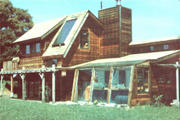

PHOTOS BY THE AUTHOR
Warming winter rays enter through the double-glazed windows on the southern exposure of the California Sun House and heat the tile floor. This thermal mass then gives up the day's heat throughout the night . . . keeping the interior of the home comfy, Dur